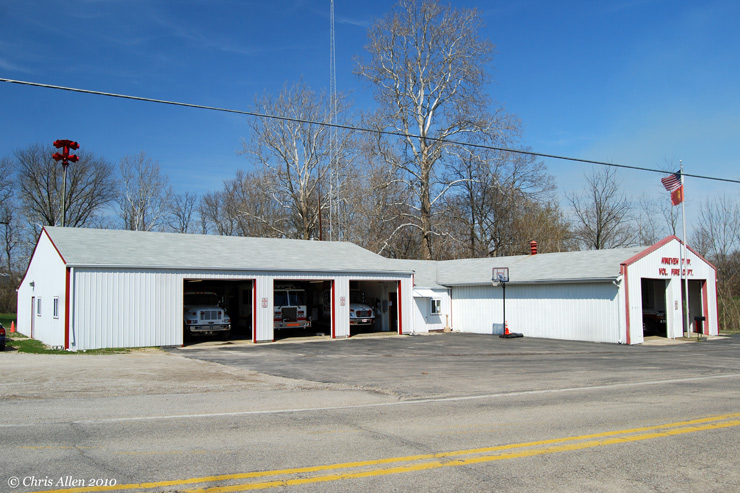
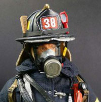

About the Station
Ninevah Fire Department serves
a population of nearly 1,000 people in Southern Johnson County.
This all-volunteer department responds from a single station in a mixed rural and residential district. Nineveh provides Fire and Rescue response to nearly 1,000 residents over 15 square miles.
Meet the Firefighters

Events
Blog
April 18
Todd writes...
This week is Dispatcher appreciation week. The Nineveh Fire Dept. would like to thank the Johnson County PSAP communication center. It's not easy managing the chaos that can happen without a moments notice. Also would like to point out and thank one of our own. Assistant Chief Josh Elmore who works as a dispatcher at the JoCo PSAP. We appreciate what you all do. Thank you
Read more blog posts...
Social